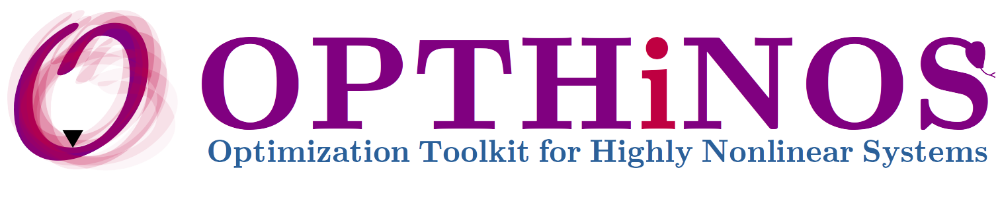

I am a postdoctoral research associate in the Department of Mechanical Engineering at the Massachusetts Institute of Technology, where I am developing algorithms for fluid mechanics and FSI problems with a focus on creating a digital twin framework using deep learning techniques. Before joining MIT, I was awarded the Fields CQAM postdoctoral fellowship at the Fields Institute at the University of Toronto, where I worked on reduced-order modeling for fluid dynamics in a Lagrangian system. I also have previous experience as a postdoctoral fellow at Polytechnique Montreal, affiliated with the University of Montreal, where I worked on digital twin and deep learning algorithms.
I obtained my Ph.D. in Mechanical Engineering at the Computational Aerodynamics Lab at Concordia University, where my thesis focused on controlling instability in chaotic optimizations. Through my postdoctoral research, I have honed my expertise in using physics-based machine learning algorithms to develop surrogate models for large-scale Partial Differential Equations (PDEs). I am particularly interested in the intersection of chaos theory, machine learning, and fluid dynamics, where I study the impact of chaos on universal laws, modern technologies, and human life.
I have developed different software to employ them in my research program. I am using an in-house CFD solver for flow analysis. Furthermore, I developed a package for optimization called OPTHiNOS for sensitivity analysis, Uncertainty Quantification (UQ), and PDE-constrained optimization for highly nonlinear dynamical systems.
